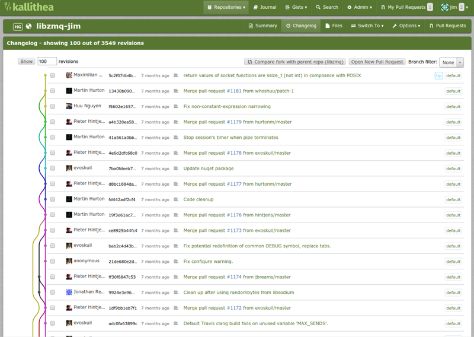

Малышам о минералах
Так называлась одна из любимых книг моего детства. После неё я ещё несколько лет собирал по песочницам разные камни, коих у меня была целая коллекция. Она, как и многое другое, благополучно канула в лету. Но это так, лирическое отступление.
У нас было две версии руби из репозитория, 75 гемм, 2 версии thin сервера, ящик циклических зависимостей, пара попыток поставить отдельный environment и куча разных конфигов всех сортов и расцветок. Не то, чтобы этого было достаточно для того, чтобы поднять проект, но если связался с руби, уже трудно остановиться. Единственное, что вызывает у меня опасения - это пакеты из стока дистрибутива. Нет ничего более беспомощного, безответственного и испорченного, чем руби окружение, поставленное из стока, с установленными поверх геммами. Я знал, что рано или поздно мы перейдём на эту дрянь.
Примерно так год назад выглядел мой отчёт начальнику на его вопрос - "как там у нас с переездом редмайна на свежее окружение?"
Разные люди смотрят на одни и те же вещи совершенно по-разному. Если взять, например, автомобили, то простой пользователь при приобретении будет обращать внимание на эргономику, удобство, пробег и тому подобные вещи. А вот, например, человек, работающий автомехаником, приобретая себе машину, вероятно обратит бОльшее внимание на совершенно другие её свойства - надёжность например, потенциальную стоимость ремонта, доступность деталей. К чему это я? Я терпеть не могу руби. У меня стойкая аллергия к тому, что на этом языке написано. Редмайн и Гитлаб - прекрасны и вплоне состоялись, как проекты. Но их миграция на более свежее окружение зачастую - огромная головная боль, особенно, когда это некое legacy, которое было установлено года три-четыре назад и это нужно перенести на новую версию. Самое страшное, что редмайн, например, обрастает своими версиями плагинов, которые заброшены 5 лет тому назад и используют библиотеки, в которых что-то deprecated ещё в период мезозоя. Вобщем, по моим наблюдениям, в Ruby очень любят слово deprecated. Иногда они так делают с целыми типами данных и весь лог благополучно покрывается ворнингами - мол как это - мы это депрекейтед уже вчера, а твои библиотеки с последним коммитом семилетней давности всё ещё никто не переписал? Более того, когда разработчики на руби начинают писать шелл скрипты - туши свет! Помню, как-то столкнулся с проблемой - не поднимался гитлаб после аварийного ребута. Оказывается, сервис скрипт для SysV init, написанный разработчиками гитлаба работал в соответствии с шикарной логикой. При запуске:
- проверяем наличие pid файла
- если его нет - поднимаем гитлаб (!!!)
- берём его pid
- складываем его в pid файл
Ну и при отановке соответственно, pid файл удалялся. Гениально! Если файл есть, то значит, гитлаб поднят и поднимать его уже не надо! Железная логика! Дописать одну строку, которая будет проверять наличие процесса с пидом из файла и проверять, что этот процесс и есть гитлаб? Это похоже, выше их достоинства.
При переносе на новую версию тоже приходилось подпрыгивать, выполнять инструкицю по переходу, состоящую из пары десятков пунктов, некоторые из которых занимали приличное количество времени. Особенно миграции базы. Поэтому приходилось делать это в выходные, чтобы ещё успеть всё более-менее проверить. А потом в понедельник всё отдавалось отделу тестирования на дополнительную проверку, в результате чего вылезали какие-то мелкие проблемы - уже смутно это всё помню, много лет уже прошло. Но с полгода назад Umputun в Radio-T рассказывал, что тоже наткнулся на какие-то проблемы при миграции гитлаба. Кажется, какая-то группа пользователей была названа system, а разработчики гитлаба решили взять это имя группы в качестве системного и с этого момента миграция пошла по пи... Поехала по рельсам, ага. Ruby on Rails же... Одним словом - в отношении удобства и функционала что Redmine, что Gitlab выглядят очень приятными и качественными продуктами. Но если бы я решил себе поставить систему управления задачами, я бы трижды подумал, а стОит ли брать redmine? А при желании установить систему контроля версий - gitlab точно не поставил бы. В качестве сервиса в то же время я его использую и он меня всем устраивает. Особенно тем, что поддерживать его приходится не мне.

Кстати, довольно интересной альтернативой гитлабу является Kallithea - очень рекомендую посмотреть, хотя бы из любопытства. Может быть, она не настолько развесиста, но весь основной функицонал в ней присутствует и при этом никаких проблем с апгрейдом версий я не встретил. Маленькая, быстрая, лёгкая, есть gist, управление правами доступа, возможность работать с гитом через https с авторизацией и прочие плюшки.